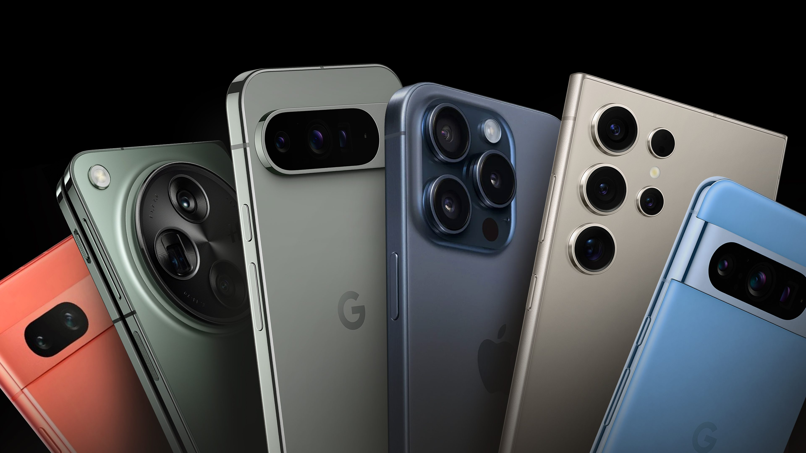

These compact and portable devices typically combine all the components of a desktop computer, including a display, keyboard, and a trackpad in a single unit. Their importance lies in their ability to store large amounts of data and run demanding applications, all while being lightweight and easy to transport It ultimately depends on your specific needs, preferences, and how you plan to use your laptop. For most users, a 14 to 15-inch laptop offers a good balance of screen space and portability. However, if you prioritize mobility, a 13-inch ultraportable might be ideal Computer technology is an expanding branch of engineering, with roots in both electrical engineering and computer science. It includes the related areas of computer hardware and software; computer interfacing, programming, and networking; analog and digital electronics; and robotics.Technology is the use of scientific knowledge for practical purposes, and for solving problems. Technology can aid human life or industries. Information technology (IT) is a set of related fields that encompass computer systems, software, programming languages, and data and information processing, and storage. IT forms part of information and communications technology (ICT).Information technology (IT) is a broad professional category covering functions including building communications networks, safeguarding data and information, and troubleshooting computer problems.
copyright@ 2017.all rights reserved.
I define myself as a woman who is strong, independent, and confident. I am a woman who knows what she wants and isn't afraid to go after it. I am a woman who is kind and compassionate, but also knows how to stand up for herself. I am a woman who is proud of who she is and what she has accomplished i am a student of artificial intelligence. Artificial Intelligence is the intelligence possessed by the machines under which they can perform various functions with human help. With the help of A.I, machines will be able to learn, solve problems, plan things, think, etc. Artificial Intelligence, for example, is the simulation of human intelligence by machines. Artificial Intelligence (AI) is a transformative technology that simulates human intelligence in machines, enabling them to perform various tasks like problem-solving, learning, and decision-making
Artificial Intelligence (AI) is a transformative technology that simulates human intelligence in machines, enabling them to perform various tasks like problem- solving, learning, and decision-making AI has diverse applications, from self-driving cars and virtual assistants to healthcare diagnostics and finance. Its potential is boundless, promising to transform industries and enhance our daily lives. It can analyze vast datasets to provide insights, automate routine tasks, and even assist in medical research. it is a very goog field and has many options in it.
copyright@ 2017.all rights reserved.
copyright@ 2017.all rights reserved.
Computer technology is an expanding branch of engineering, with roots in both electrical engineering and computer science. It includes the related areas of computer hardware and software; computer interfacing, programming, and networking; analog and digital electronics; and robotics.Technology is the use of scientific knowledge for practical purposes, and for solving problems. Technology can aid human life or industries. Information technology (IT) is a set of related fields that encompass computer systems, software, programming languages, and data and information processing, and storage. IT forms part of information and communications technology (ICT).Information technology (IT) is a broad professional category covering functions including building communications networks, safeguarding data and information, and troubleshooting computer problems.“Computer is a data processing device that performs four major functions: input, process, output, and storage” 2. There are basically for basic functions of computers - input, storage, processing and output. These are described below: Input: Receiving or accepting information from outside sources.Across virtually every industry, computer science professionals are engaged in programming, systems analysis, database administration, network architecture, software development, research, and more.Technology is the study of scientific knowledge in order to create tools and processes that may be used to change the world by increasing efficiency in nearly.

Mobile phones are used for a variety of purposes, such as keeping in touch with family members, for conducting business, and in order to have access to a telephone in the event of an emergency. Some people carry more than one mobile phone for different purposes, such as for business and personal use.Portability is the most important benefit of smartphones. Users can perform many work-related and social activities on their phones, assuming they are properly configured. They can send and receive emails, set up meetings, work on reports, and other functions they might otherwise perform at their workplace.The advantages of using mobile phones are that they make our lives easier. They help us in easy communication, online education, banking and transactions, safety, emergency assistance etc.They come in use for communicating through voice, messages, and mails. We can also surf the internet using a phone. Most importantly, we also click photos and record videos through our mobile's camera.Communication: They allow you to talk to others almost anywhere. Emergency: Mobile phones are crucial during emergencies. Storage: They enable you to store data. Entertainment: Mobile phones provide entertainment through games, music, and videos.
copyright@ 2017.all rights reserved.